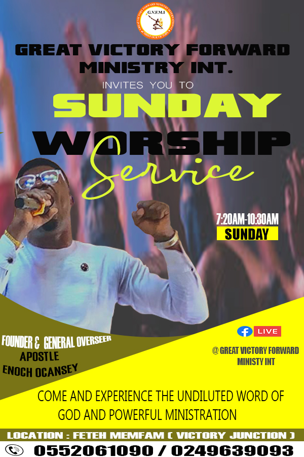
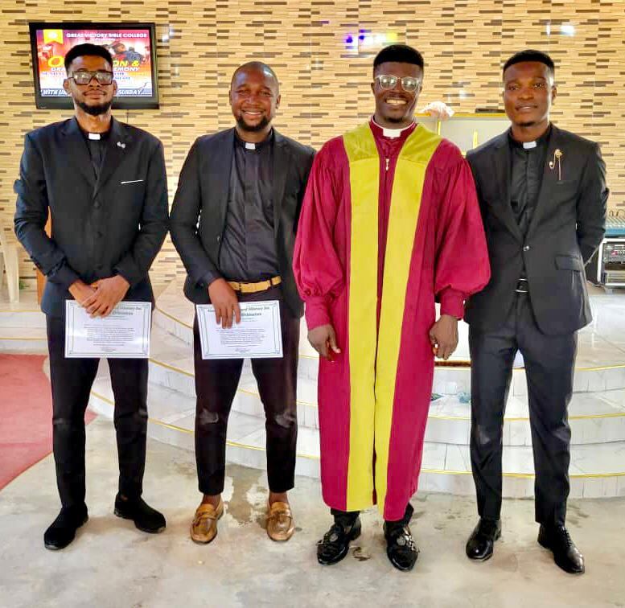
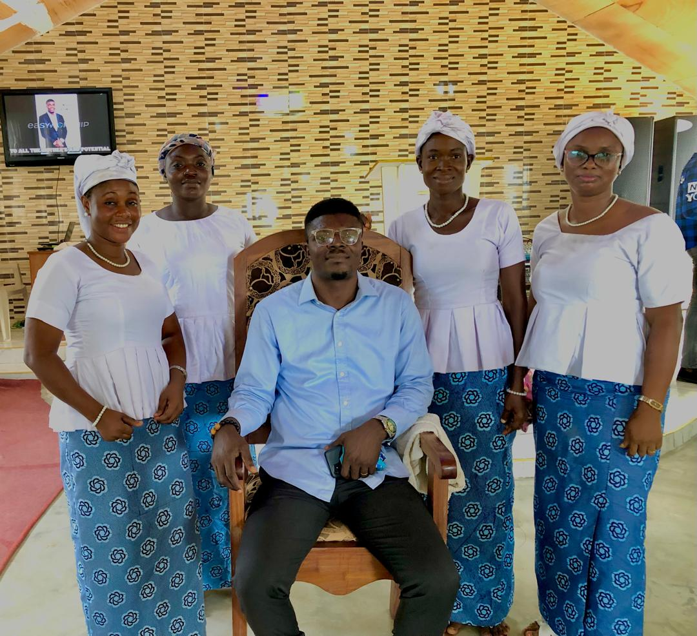
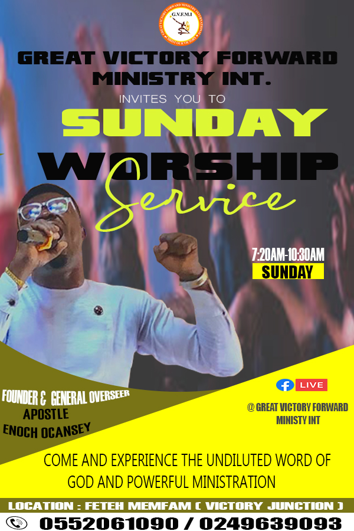
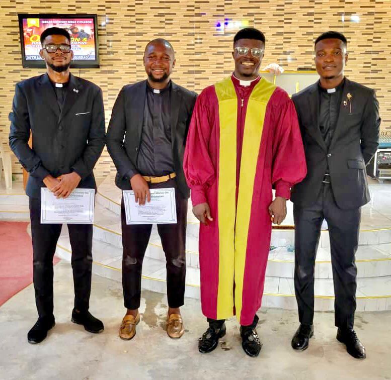
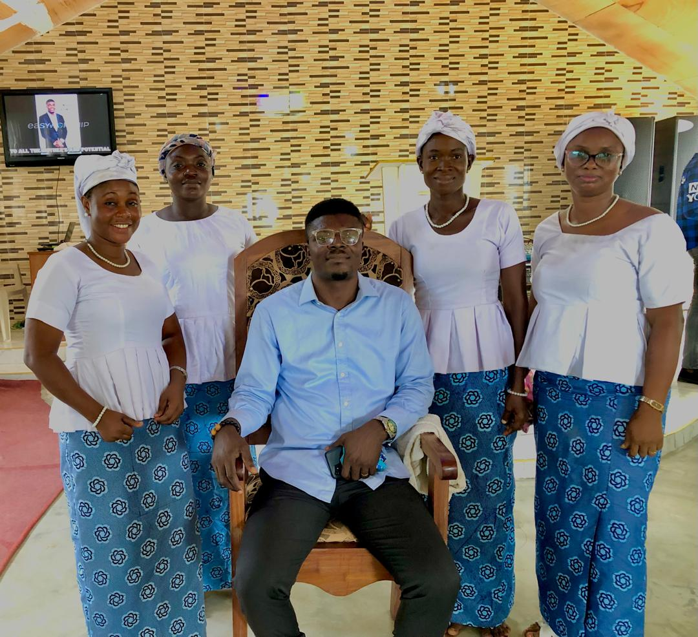

Great Victory Forward Ministry International Church
Victory Forward!! Christ our Victory!!!
Our Ministry
Children Ministry
Children Ministry: "Our Children Ministry is a vibrant space where kids learn about God's love through stories, worship, and fun activities. We aim to nurture their faith and help them build a strong foundation in Christ.
Youth Ministry
The Youth Ministry equips young people to grow in their faith, discover their purpose, and become leaders. Through fellowship and spiritual guidance, we inspire youth to live boldly for Christ.
Adult Ministry
Men Fellowship
Men Fellowship is a community where men grow spiritually, encourage one another, and learn to lead with integrity in their families and communities.
Women Fellowship
Women Fellowship offers support and spiritual growth for women as they deepen their faith, build lasting friendships, and serve God together.
Upcoming Events
| Date | Event |
|---|---|
| November | 14days prayer & fasting |
| December | love feast & pastors appreciation |
| December | 31st watch night Service |
Our Church Gallery
 





Worship Schedule
We gather to worship every Sunday at 7:20am and Friday evening at 6:30pm.
| Day | Time | Location |
|---|---|---|
| Sunday | 7:20am | Main Auditorium |
| Friday | 6:30pm | Main Auditorium |
Our Vison
We exist to connect people to Jesus Christ, and to see people saved ,healed ,set free, discipled, equipped, empowered and serving.
Our mission
Our mission is to lead people to become fully devoted followers of Christ, and again help people to find God,grow their faith,discover their purpose and make a difference, and also lead people into a growing relationship with Jesus Christ.
Contact Us
Email: greatvictoryforwardministryint@gmail.com
Phone: +233 552 061 090 / +233 249 639 093
Our Location
Fetteh Mamfam (Victory Juction)